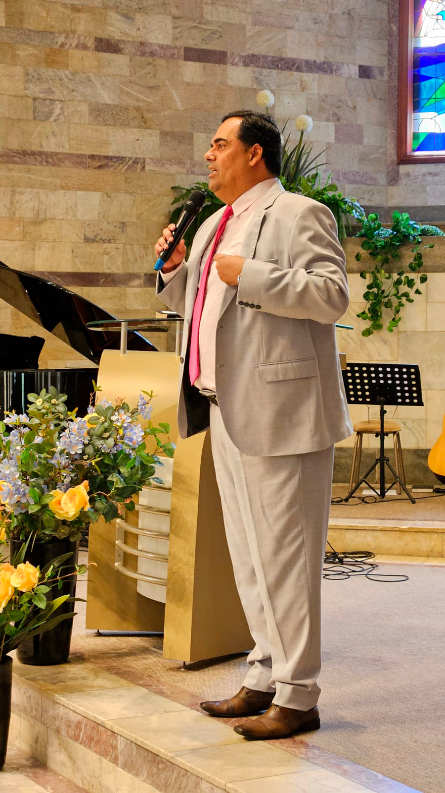

NOSSOS VALORES
NOSSO PASTOR
Euzélio Vaz Filho nasceu no Rio
de Janeiro e atua como
Pastor
Titular na IASD Floresta desde o
mês de dezembro
de 2022.

O Evangelho é Cristo
Valorizamos a fé e a pregação centralizada em Jesus.
Tudo começa pela graça
Valorizamos uma religião impulsionada pela compreensão verdadeira do amor de Deus.
A Bíblia é a verdade que liberta
Valorizamos a Palavra de Deus como regra de fé e prática
Princípios são eternos, culturas são mutáveis
Valorizamos a contextualização do Evangelho, sem abrir mão da fidelidade dos princípios
A conversão é obra do Espírito Santo
Valorizamos a compreensão de que somente Deus pode trazer a real transformação
Servimos a Deus com a excelência
Valorizamos a adoração e serviço voluntário feitos da melhor forma possível
A igreja são as pessoas
Valorizamos a comunidade como uma família. Igreja como pessoas e não edifícios
Sou discípulo a todo tempo
Valorizamos uma vida de discipulado. 24h por dia, 7 dias por semana